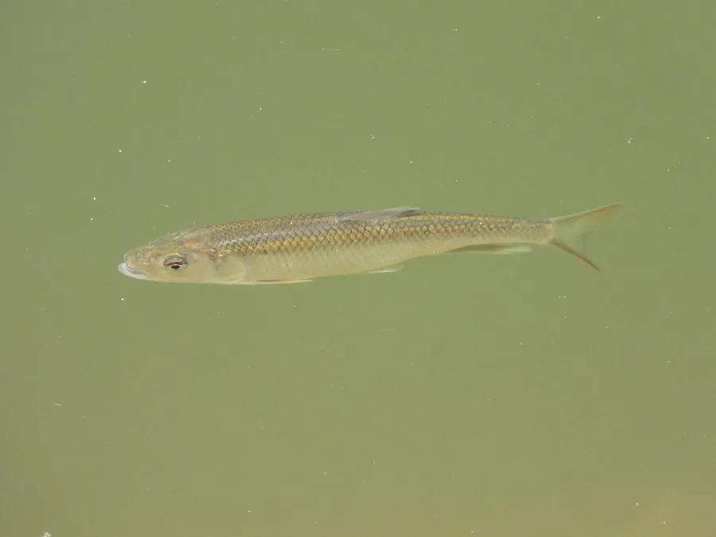

鱼类 · 动物界
马口鱼 Opsariichthys bidens

东亚溪流中的小型鲤科鱼类，雄鱼繁殖期体色鲜艳、口裂呈马口状，喜清澈急流，是溪流钓的常见对象。
- 分类
- 门脊索动物门纲辐鳍鱼纲目鲤形目科鲤科属马口鱼属
- 栖息环境
- 水质清澈、水流较急、砾石底质的溪流和江河上游
- 地理分布
- 中国、日本、朝鲜半岛和俄罗斯远东的淡水水域
- 保护级别
- 暂无评估；中国未列入国家重点保护野生动物名录
物种志
马口鱼体呈长形，侧扁，头尖，口大，口裂向上倾斜，像马嘴，因此得名。雄鱼在繁殖期体色鲜艳，体侧有蓝绿色金属光泽，腹鳍和臀鳍呈橙红色；雌鱼体色较淡。成鱼体长一般 10–20 cm，最大可达 25 cm。
马口鱼分布于中国、日本、朝鲜半岛和俄罗斯远东的溪流、江河上游和水库，喜欢水质清澈、水流较急、砾石底质的环境。它是肉食性鱼类，捕食水生昆虫、小鱼和虾，也吃藻类。繁殖期在春夏季，雄鱼会追逐雌鱼，在水流平缓的沙砾底产卵。马口鱼个体不大，但咬钩凶猛，是溪流钓爱好者喜爱的对象，也可油炸食用。目前尚无明确的 IUCN 评估。
形态与习性
- 食性肉食性，捕食水生昆虫、小鱼和虾
- 体长一般 10–20 cm，最大可达 25 cm
- 外形口裂向上倾斜呈马口状，雄鱼繁殖期体色鲜艳
- 栖息环境水质清澈、水流较急的溪流和江河上游
- 繁殖春夏季在沙砾底产卵
- 垂钓咬钩凶猛，是溪流钓常见对象
趣味知识
- 马口鱼的口裂向上倾斜，像马嘴，因此得名。
- 繁殖期的雄鱼体色鲜艳，体侧泛出蓝绿色金属光泽。
- 它个体虽小，但咬钩凶猛，是溪流钓爱好者喜爱的对象。